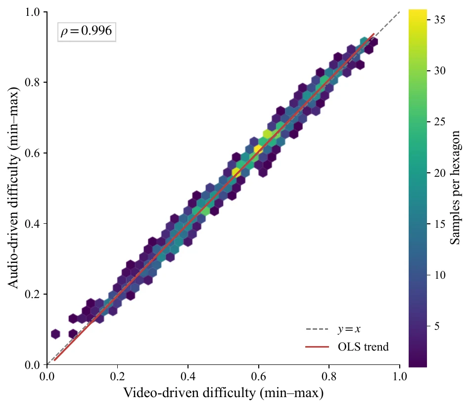
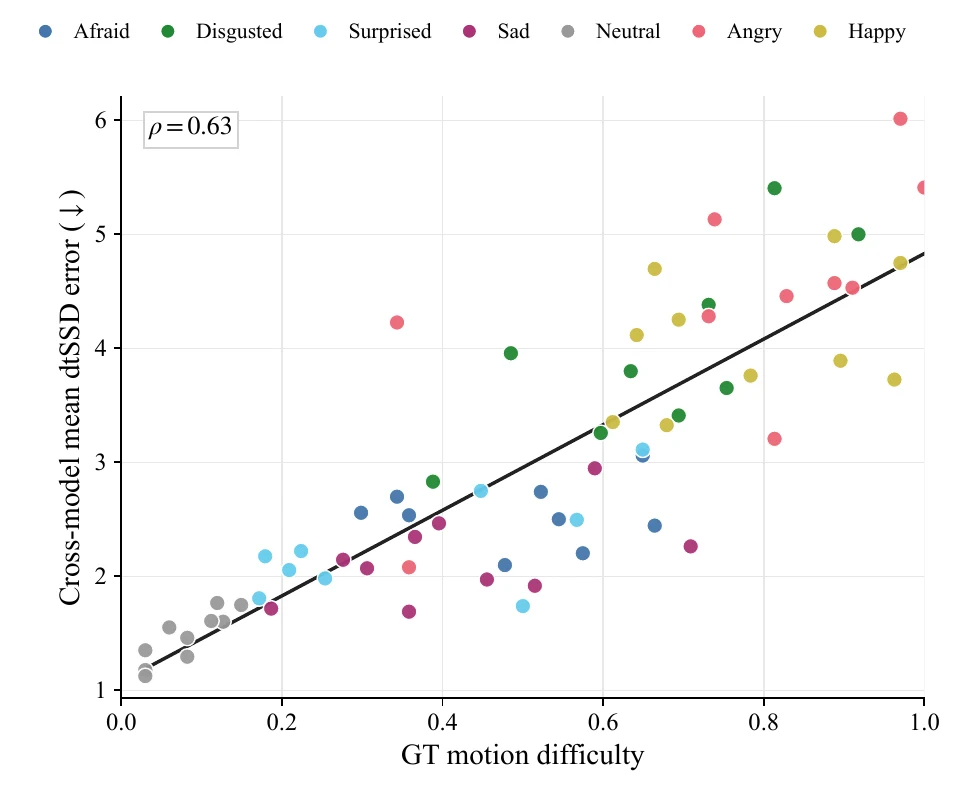

Controlled correspondence
The same 280 emotion–action–prompt assignments recur for every retained actor.
A condition-aligned benchmark · 2026
HUG-VIS brings human-centered understanding and generation onto the same coordinate system—aligning affect, motion, speech, identity, and foreground quality within every performance.
Controlled release The dataset page and access instructions are available. A finalized license form and gated dataset files will be released before applications open.
From controlled collection and synchronized annotation to four task-specific evaluation tracks.
HUG-VIS
01 / Overview
Most benchmarks isolate one capability on one dataset. HUG-VIS instead evaluates distinct systems against the same actors, assignments, source clips, and condition identifiers.
This shared coordinate system makes it possible to ask whether a difficult case is specific to one model family, shared across tasks, or tied to an interpretable property of the source performance. Each track keeps its own outputs and metrics—there is no artificial single score.
The same 280 emotion–action–prompt assignments recur for every retained actor.
Recognition, synthesis, cloning, and matting retain criteria appropriate to their outputs.
Shared identifiers support paired, source-level comparisons across otherwise distinct tasks.
02 / Dataset
Each seated half-body performance begins from a canonical resting pose, follows an assigned Mandarin prompt and action template, and returns to rest. The fixed frontal studio setup prioritizes precise cross-condition diagnosis over in-the-wild diversity.
Per-clip assets
03 / Benchmark tracks
HUG-VIS evaluates perception, generation, speech, and foreground understanding on the same actor-by-assignment grid. Every task follows a zero-shot protocol, while its inputs, outputs, and evaluation criteria remain native to the capability being measured.
Perception
Recognize seven instructed emotion conditions from isolated modalities and multimodal combinations.
Generation
Generate portrait, head, or half-body performances under audio-driven and vision-driven settings.
Speech
Synthesize expressive Mandarin speech while preserving source-speaker identity and affective delivery.
Foreground
Recover temporally coherent alpha mattes from controlled RGB sequences with fine boundary motion.
Qualitative evaluation
Temporally aligned sequences and enlarged local regions reveal identity drift, incomplete motion, structural hand failures, and unstable alpha boundaries that average metrics can dilute.
Six ordered time points align the source portrait, transcript, audio waveform, and model outputs. The sequence exposes facial deformation, background artifacts, identity stability, and expression dynamics.
The source frame and driving motion sequence are followed by aligned outputs from open- and closed-source systems. Differences appear in arm-trajectory timing, gesture completion, appearance, and background stability.
Enlarged insets localize fused, extra, blurred, distorted, and missing fingers or hands across six systems. These local defects occupy few pixels and can disappear inside frame-averaged scores.
Seven frames compare RGB input, reference alpha, and nine model predictions. Red overlays highlight boundary discrepancies, foreground leakage, and temporal inconsistency relative to the reference.
04 / Experimental results
No HUG-VIS sample is used for training, fine-tuning, calibration, or model selection.
Task 01
| Input | Best model | Accuracy ↑ |
|---|---|---|
| Image frame | MMA-DFER | 37.05% |
| Video | MiniCPM-o 4.5 | 48.52% |
| Audio | Audio-Reasoner-7B | 74.38% |
| Text | DeepSeek-V3.2 | 82.93% |
| Video + Audio | Qwen2.5-Omni-7B | 73.70% |
| Video + Text | Qwen2.5-Omni-7B | 83.74% |
| Video + Audio + Text | Qwen2.5-Omni-7B | 83.79% |
Text is substantially stronger than visual-only inputs; adding audio to video + text improves the tested trimodal system by only 0.05 points.
Task 02 · Audio-driven
| Evaluation | Criterion | Best model | Score |
|---|---|---|---|
| Objective | CSIM ↑ | Ditto | 0.904 |
| Objective | Sync-C ↑ | LatentSync | 5.43 |
| Objective | Sync-D ↓ | Sonic / LatentSync | 7.73 |
| MOS | ID similarity ↑ | Sonic | 4.44 |
| MOS | Emotion ↑ | Sonic | 4.16 |
| MOS | Lip sync ↑ | LatentSync | 4.47 |
Identity and synchronization produce different leaders: Ditto leads CSIM, while Sonic and LatentSync lead perceptual and lip-sync criteria.
Task 02 · Vision-driven
| Group | Objective metric leaders | MOS leaders |
|---|---|---|
| Open · Head | X-NeMo: LPIPS 0.520, PSNR 10.15, FID 150.57 AniPortrait: CSIM 0.884, SSIM 0.383 | PersonaLive!: ID 4.41 X-NeMo: Emotion 3.68, Motion 3.82 |
| Open · Body | Animate-X: LPIPS 0.139, PSNR 18.81, SSIM 0.755 Wan2.2: CSIM 0.783, FID 20.24 | Wan2.2: ID 4.82, Emotion 4.61, Motion 4.72 |
| Closed-source | Vidu: LPIPS 0.195, CSIM 0.786, FID 20.05 Kling: PSNR 16.41, SSIM 0.721 | Kling: ID 4.76, Motion 4.64 Vidu: Emotion 4.60 |
Systems are compared only within their reported output scopes. No single model leads reconstruction, identity, motion, and human judgment simultaneously.
Task 03
| Group | UTMOS ↑ | DNSMOS ↑ | Speaker sim. ↑ | MOS ID ↑ | MOS emotion ↑ |
|---|---|---|---|---|---|
| Open-source | OpenAudio S1 2.32 | OpenAudio S1 3.01 | CosyVoice 3 0.856 | IndexTTS2 4.24 | IndexTTS2 4.40 |
| Closed-source | Inworld TTS-1.5 2.69 | Inworld TTS-1.5 3.22 | Eleven Multilingual v2 0.779 | Eleven Multilingual v2 3.73 | Eleven Multilingual v2 4.23 |
Real audio provides a 0.990 speaker-similarity reference. Reference-free quality scores should not be treated as upper-bound fidelity measurements.
Task 04
| Model | MAD ↓ | MSE ↓ | dtSSD ↓ | Grad ↓ | Conn ↓ |
|---|---|---|---|---|---|
| BiRefNet | 2.30 | 0.82 | 2.04 | 10.43 | 4.31 |
| MatAnyone 2 | 3.86 | 0.91 | 2.12 | 11.45 | 4.53 |
BiRefNet leads all five criteria. Residual errors concentrate around fine hand boundaries, rapid motion contours, and foreground leakage.
Cross-task analysis
Afraid is hardest for recognition, Sad for several head-generation criteria, Angry for voice-quality predictors, and Happy for spatial matting error. Difficulty belongs to the combination of source, capability, and evaluation criterion—not to the source alone.


05 / Access & responsibility
HUG-VIS contains identifiable recordings of human participants. Access is limited to approved, non-commercial academic research under the recipient data-use agreement. Once applications open, requests will be reviewed manually, and completing the steps below will not guarantee approval.
Request access
[HUG-VIS Access] Full Name | Institution | HF username as the subject.The form in the current main GitHub repository still contains provider and citation placeholders and is not final. Check for a finalized revision before signing or submitting it.
Responsible use
All actors provided written informed consent before recording for research capture and authorized use of their identifiable likeness, voice, and performed behavior. Public examples released by the project are limited to research uses covered by those authorizations; dataset access does not grant recipients permission to republish identifiable material.
License essentials
This summary does not replace the complete HUG-VIS Dataset Academic Use License.
06 / Citation
Formal publication metadata and the final BibTeX entry will be added with the paper release.
@misc{hugvis2026,
title = {HUG-VIS: A Multimodal Benchmark for
Human-centered Understanding and Generation
in Visual Intelligence},
author = {Ma, Fei and Cheng, Zebang and Li, Minghui and
Xu, Hongbo and Tan, Yuyong and Shao, Yihua and
Wang, Hanling and Liu, Zhou and Gao, Yuqing and
Wang, Dong and Ma, Long and Cui, Laizhong and
Sebe, Nicu and Tian, Qi},
year = {2026},
url = {https://github.com/GML-MMGroup/HUG-VIS}
}